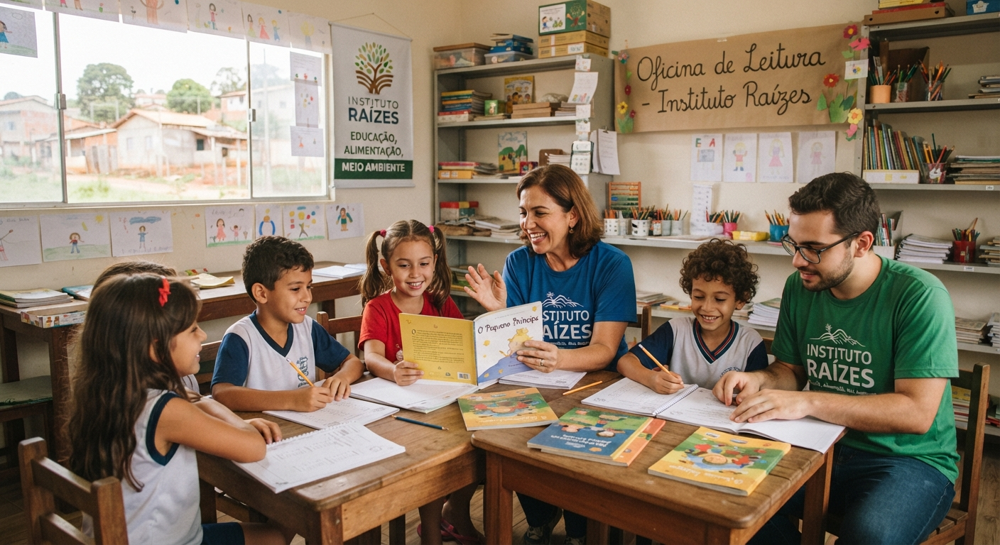
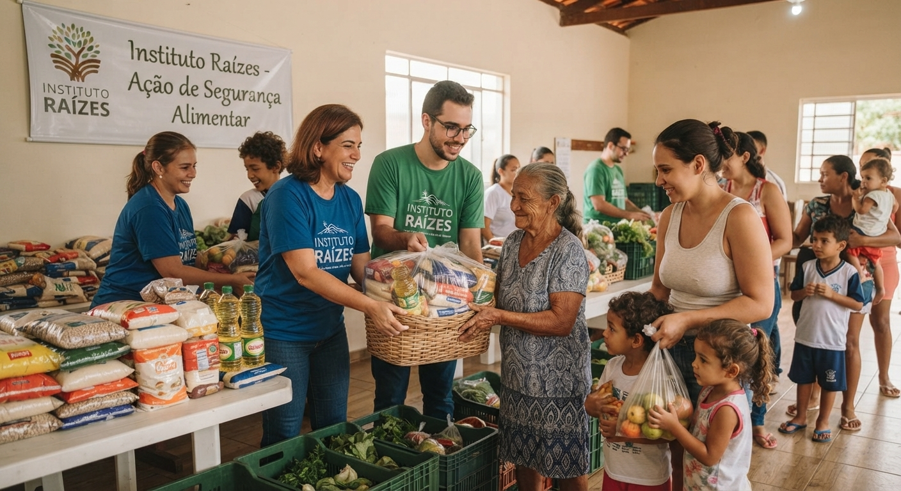
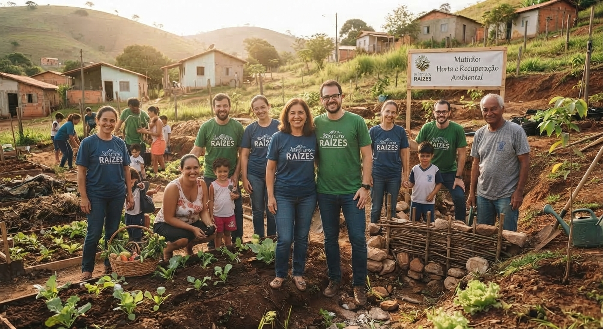

Educação
Reforço escolar e oficinas de leitura para crianças de 6 a 12 anos, no contraturno.
Atuamos direto na base: educação, alimentação e meio ambiente, movidos por quem doa tempo, não só recursos.
Quero ser voluntárioO Instituto Raízes nasceu em 2014 no interior de Minas Gerais, a partir de um grupo de professores que via crianças chegando à escola sem ter comido no dia. Hoje somos uma rede de voluntários presente em 12 municípios, sustentada quase inteiramente por doações recorrentes e trabalho voluntário.
Acreditamos que impacto duradouro não vem de doação pontual, mas de presença constante — por isso cada projeto nosso é pensado para continuar de pé mesmo nos meses de menor arrecadação.

Reforço escolar e oficinas de leitura para crianças de 6 a 12 anos, no contraturno.

Distribuição semanal de cestas básicas e refeições para famílias em situação de insegurança alimentar.

Mutirões de recuperação de nascentes e hortas comunitárias nos bairros onde atuamos.